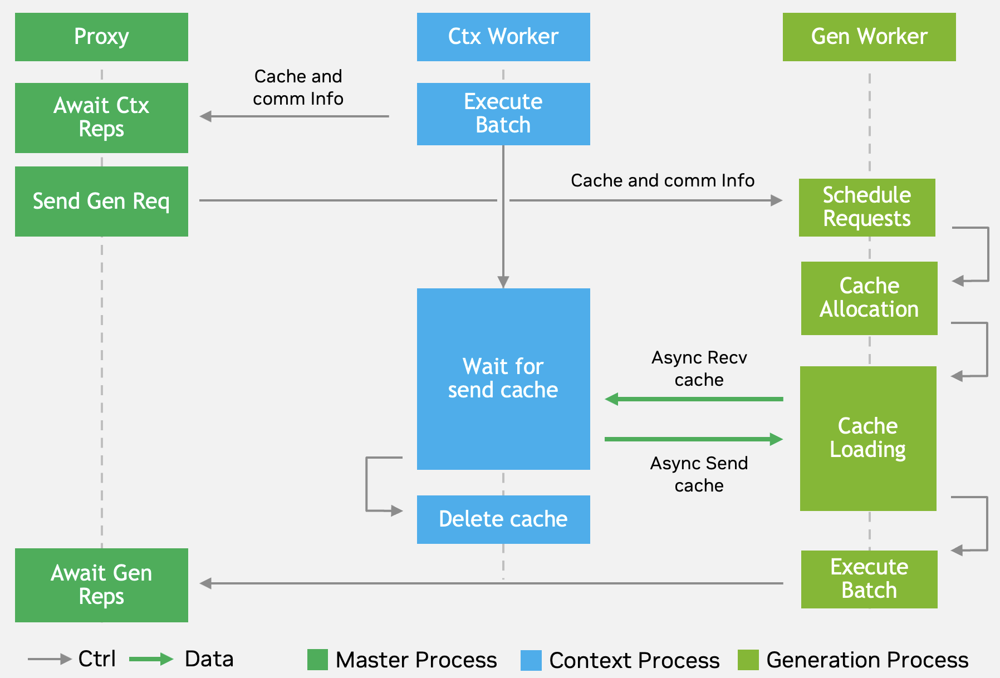

===== docs/source/overview.md =====
(product-overview)=
# Overview
## About TensorRT LLM
[TensorRT LLM](https://developer.nvidia.com/tensorrt) is NVIDIA's comprehensive open-source library for accelerating and optimizing inference performance of the latest large language models (LLMs) on NVIDIA GPUs.
## Key Capabilities
### 🔥 **Architected on Pytorch**
TensorRT LLM provides a high-level Python [LLM API](./quick-start-guide.md#run-offline-inference-with-llm-api) that supports a wide range of inference setups - from single-GPU to multi-GPU or multi-node deployments. It includes built-in support for various parallelism strategies and advanced features. The LLM API integrates seamlessly with the broader inference ecosystem, including NVIDIA [Dynamo](https://github.com/ai-dynamo/dynamo) and the [Triton Inference Server](https://github.com/triton-inference-server/server).
TensorRT LLM is designed to be modular and easy to modify. Its PyTorch-native architecture allows developers to experiment with the runtime or extend functionality. Several popular models are also pre-defined and can be customized using [native PyTorch code](source:tensorrt_llm/_torch/models/modeling_deepseekv3.py), making it easy to adapt the system to specific needs.
### ⚡ **State-of-the-Art Performance**
TensorRT LLM delivers breakthrough performance on the latest NVIDIA GPUs:
- **DeepSeek R1**: [World-record inference performance on Blackwell GPUs](https://developer.nvidia.com/blog/nvidia-blackwell-delivers-world-record-deepseek-r1-inference-performance/)
- **Llama 4 Maverick**: [Breaks the 1,000 TPS/User Barrier on B200 GPUs](https://developer.nvidia.com/blog/blackwell-breaks-the-1000-tps-user-barrier-with-metas-llama-4-maverick/)
### 🎯 **Comprehensive Model Support**
TensorRT LLM supports the latest and most popular LLM and DiT architectures. See [complete list](./models/supported-models.md).
- **Language Models**: GPT-OSS, Deepseek-R1/V3, Llama 3/4, Qwen2/3, Gemma 3, Phi 4...
- **Multi-modal Models**: LLaVA-NeXT, Qwen2-VL, VILA, Llama 3.2 Vision...
- **[Visual Generation](./models/visual-generation.md) Models**: FLUX, Wan2.1/2.2 for image and video generation.
TensorRT LLM strives to support the most popular models on **Day 0**.
### FP4 Support
[NVIDIA B200 GPUs](https://www.nvidia.com/en-us/data-center/dgx-b200/), when used with TensorRT LLM, enable seamless loading of model weights in the new [FP4 format](https://developer.nvidia.com/blog/introducing-nvfp4-for-efficient-and-accurate-low-precision-inference/#what_is_nvfp4), allowing you to automatically leverage optimized FP4 kernels for efficient and accurate low-precision inference.
### FP8 Support
On NVIDIA H100 and later GPUs, TensorRT LLM supports [FP8 quantization](./features/quantization.md), which can double performance and halve memory consumption compared to 16-bit floating point, with minimal impact on model accuracy.
### 🚀 **Advanced Optimization & Production Features**
- **[In-Flight Batching & Paged Attention](./features/paged-attention-ifb-scheduler.md)**: In-flight batching eliminates wait times by dynamically managing request execution, processing context and generation phases together for maximum GPU utilization and reduced latency.
- **[Multi-GPU Multi-Node Inference](./features/parallel-strategy.md)**: Seamless distributed inference with tensor, pipeline, and expert parallelism across multiple GPUs and nodes through the Model Definition API.
- **[Advanced Quantization](./features/quantization.md)**:
- **FP4 Quantization**: Native support on NVIDIA B200 GPUs with optimized FP4 kernels
- **FP8 Quantization**: Automatic conversion on NVIDIA H100 GPUs leveraging Hopper architecture
- **[Speculative Decoding](./features/speculative-decoding.md)**: Multiple algorithms including EAGLE, MTP and NGram
- **[KV Cache Management](./features/kvcache.md)**: Paged KV cache with intelligent block reuse and memory optimization
- **[Chunked Prefill](./features/paged-attention-ifb-scheduler.md)**: Efficient handling of long sequences by splitting context into manageable chunks
- **[LoRA Support](./features/lora.md)**: Multi-adapter support with HuggingFace and NeMo formats, efficient fine-tuning and adaptation
- **[Checkpoint Loading](./features/checkpoint-loading.md)**: Flexible model loading from various formats (HuggingFace, NeMo, custom)
- **[Guided Decoding](./features/guided-decoding.md)**: Advanced sampling with stop words, bad words, and custom constraints
- **[Disaggregated Serving (Beta)](./features/disagg-serving.md)**: Separate context and generation phases across different GPUs for optimal resource utilization
## What Can You Do With TensorRT LLM?
Whether you're building the next generation of AI applications, optimizing existing LLM deployments, or exploring the frontiers of large language model technology, TensorRT LLM provides the tools, performance, and flexibility you need to succeed in the era of generative AI. To get started, refer to the {ref}`quick-start-guide`.
===== docs/source/developer-guide/overview.md =====
# Architecture Overview
The `LLM` class is a core entry point for the TensorRT LLM, providing a simplified `generate()` API for efficient large language model inference. This abstraction aims to streamline the user experience, as demonstrated with TinyLlama:
```python
from tensorrt_llm import LLM
# Initialize the LLM with a specified model
llm = LLM(model="TinyLlama/TinyLlama-1.1B-Chat-v1.0")
# Generate text using the model
output = llm.generate("Hello, my name is")
```
The `LLM` class automatically manages essential pre and post-processing steps, including tokenization (encoding input prompts into numerical representations) and detokenization (decoding model outputs back into human-readable text).
Internally, the `LLM` class orchestrates the creation of a dedicated `PyExecutor(Worker)` process on each rank.

This `PyExecutor` operates in a continuous background loop, designed for the efficient, asynchronous processing of inference requests.
The `PyExecutor`'s functionality is built upon several key components:
- `Scheduler`: Responsible for determining which active requests are ready for execution at each processing step.
- `KVCacheManager`: Manages the allocation, deallocation, and maintenance of the Key-Value (KV) Cache. This is a critical optimization for Transformer models, significantly enhancing performance during autoregressive text generation by storing previously computed attention keys and values.
- `ModelEngine`: Handles the loading and highly efficient execution of the language model on the GPU hardware.
- `Sampler`: Takes the raw outputs (logits) from the ModelEngine and applies appropriate sampling strategies (e.g., greedy, top-k, top-p, beam search) to generate the final output tokens.
During each iteration of its background loop, the `PyExecutor` performs the following sequence of operations:
- Request Fetching: Retrieves new inference requests from an internal request queue, if available.
- Scheduling: Interacts with the `Scheduler` to identify and prioritize requests that are ready to be processed in the current step.
- Resource Preparation: Coordinates with the `KVCacheManager` to ensure that the necessary Key-Value (KV) Cache resources are allocated for the selected requests.
- Model Execution: Invokes the `ModelEngine` to perform a forward pass on the scheduled requests, predicting the next output tokens.
- Output Handling: Updates the partial outputs for ongoing requests and finalizes the results for any requests that have reached completion, returning them to the user.
## Runtime Optimizations
TensorRT LLM enhances inference throughput and reduces latency by integrating a suite of runtime optimizations, including CUDA Graph, [Overlap Scheduler](../features/overlap-scheduler.md), [Speculative decoding](../features/speculative-decoding.md), etc.
### CUDA Graph
CUDA Graphs drastically reduce the CPU-side overhead associated with launching GPU kernels, which is particularly impactful in PyTorch-based inference where Python's host-side code can be a bottleneck. By capturing a sequence of CUDA operations as a single graph, the entire sequence can be launched with one API call, minimizing CPU-GPU synchronization and driver overhead.
To maximize the "hit rate" of these cached graphs, TensorRT LLM employs CUDA Graph padding. If an incoming batch's size doesn't match a captured graph, it's padded to the nearest larger, supported size for which a graph exists. While this incurs minor overhead from computing "wasted" tokens, it's often a better trade-off than falling back to slower eager mode execution. This optimization has a significant impact, demonstrating up to a 22% end-to-end throughput increase on certain models and hardware.
### Overlap Scheduler
The Overlap Scheduler maximizes GPU utilization by hiding CPU-bound latency behind GPU computation.
The key strategy is to launch the GPU's work for the next step (n+1) immediately, without waiting for the CPU to finish processing the results of the current step (n). This allows the CPU to handle tasks like checking stop criteria or updating responses for one batch while the GPU is already executing the model for the subsequent batch.
This concurrent execution pipeline is illustrated in the `PyExecutor`'s logic:
```python
# Schedule and launch GPU work for the current step (n)
scheduled_batch, _, _ = self._schedule()
batch_outputs = self._forward_step(scheduled_batch, previous_tensors_device)
sample_state = self._sample_async(scheduled_batch, batch_outputs)
# While the GPU is busy, process the CPU-bound results from the previous step (n-1)
if self.previous_batch is not None:
self._process_previous_batch()
```
This approach effectively reduces GPU idle time and improves overall hardware occupancy. While it introduces one extra decoding step into the pipeline, the resulting throughput gain is a significant trade-off. For this reason, the Overlap Scheduler is enabled by default in TensorRT LLM.
## Visual Generation
For diffusion-based visual generation (image/video), TensorRT-LLM provides a separate `VisualGen` API and `DiffusionExecutor` with its own pipeline architecture. See the [Visual Generation](../models/visual-generation.md) feature documentation.
## Module-Level Logging
TensorRT-LLM log messages include a fixed-width module tag that identifies which subsystem produced the message:
```txt
[TRT-LLM] [I] [runtime ] Loading model weights...
[TRT-LLM] [W] [_torch ] FlashAttention not available, falling back to default
[TRT-LLM] [I] [serve ] Server listening on port 8000
```
### Module Abbreviation Table
Module names longer than 8 characters are abbreviated to fit the fixed-width tag:
| Module Name | Display Tag |
|-------------|-------------|
| `_torch` | `_torch ` |
| `batch_manager` | `batchmgr` |
| `common` | `common ` |
| `cutlass_extensions` | `cutl_ext` |
| `deep_ep` | `deep_ep ` |
| `deep_gemm` | `deepgemm` |
| `executor` | `executor` |
| `executor_worker` | `exec_wkr` |
| `flash_mla` | `flashmla` |
| `kernels` | `kernels ` |
| `layers` | `layers ` |
| `runtime` | `runtime ` |
| `serve` | `serve ` |
| `quantization` | `quantize` |
| `scaffolding` | `scaffold` |
| `auto_parallel` | `autoprll` |
| `visual_gen` | `vis_gen ` |
### Per-Module Log Level Filtering
Use `TLLM_LOG_LEVEL_BY_MODULE` to set different log levels per module, overriding the global `TLLM_LOG_LEVEL`:
```bash
# Format: "level:module1,module2;level:module3"
export TLLM_LOG_LEVEL=warning
export TLLM_LOG_LEVEL_BY_MODULE="debug:_torch,runtime;info:serve"
```
This example sets the global level to `warning` but enables `debug` output for `_torch` and `runtime` modules, and `info` for `serve`. Valid levels: `trace`, `debug`, `verbose`, `info`, `warning`, `error`, `internal_error`.
===== docs/source/developer-guide/kv-transfer.md =====
# Introduction to KV Cache Transmission
This article provides a general overview of the components used for device-to-device transmission of KV cache, which is relied upon by dist-serving. It is intended as a reference for users who wish to understand the internal implementation or develop extended functionalities.
## Table of Contents
- [Workflow](#workflow)
- [Key Components](#key-components)
- [Transceiver](#transceiver)
- [Sender and Receiver](#sender-and-receiver)
- [Formatter](#formatter)
- [Connection](#connection)
- [Transfer Agent](#transfer-agent)
- [Customization](#customization)
- [Encapsulation and Overloading of Low-Level Communication Libraries](#encapsulation-and-overloading-of-low-level-communication-libraries)
- [Modifications to Upper-Level Runtime Logic](#modifications-to-upper-level-runtime-logic)
- [Evolution Outlook](#evolution-outlook)
## Workflow
<img src="https://github.com/NVIDIA/TensorRT-LLM/blob/main/docs/source/media/kv_transfer.png?raw=true" alt="KV Cache Transfer Overview" width="500" height="auto">
1. Context phase completes computation, KV cache stays in device memory awaiting transmission.
2. Context returns its communicator handle to the user, who selects the generation executor for continued communication.
3. If no prior connection exists, it's established now. Generation phase shares its cache layout with context.
4. Generation phase requests KV cache for specific tokens.
5. Context sends KV cache to generation phase.
6. Generation phase resumes computation, context releases KV cache.
## Key Components
### Transceiver
Responsible for coordinating the sending and receiving of cache among different ranks within the same executor.
### Sender and Receiver
Responsible for transmitting control plane messages. That is, during per-request transmission, the receiver bound to the generation informs the sender of the specific information it requires. The sender then sends the corresponding KV cache based on these messages.
### Formatter
Performs KV cache data transmission and correctly handles the mapping between caches across different TP/PP configurations.
### Connection
Bidirectional byte-stream protocol facility. Apart from essential operations such as connection establishment, it mainly provides send and receive functionalities. UCX accesses the system through this facility. The `AgentConnection` data structure adapts the upper-layer bidirectional send/receive semantics into a unidirectional read/write operation model.
### Transfer Agent
Unidirectional byte-stream read/write protocol facility. Apart from essential operations such as connection establishment, it primarily provides read and write functionalities. NIXL accesses the system through this facility.
## Customization
At the current stage, the customization work mainly involves inheriting the low-level data plane interfaces to enable the invocation of third-party communication libraries, as well as defining the data structures required for establishing connections in the data plane.
### Encapsulation and Overloading of Low-Level Communication Libraries
Each layer of interface described in the previous section supports overloading. Here, based on whether the underlying library uses a unidirectional or bidirectional protocol, we describe the customization methods respectively.
If the underlying library you are integrating uses a unidirectional communication model, with read/write as its primary interfaces, you should inherit the `executor::kv_cache::BaseTransferAgent` data structure. This structure mainly provides interfaces for memory registration, remote agent loading, and transfer request submission.
If the underlying library you are integrating uses a bidirectional communication model, you should inherit the `executor::kv_cache::Connection` data structure. This structure mainly provides send and receive interfaces.
### Modifications to Upper-Level Runtime Logic
This corresponds to the communication info section shown in the figure above. Since different underlying communication connections may require completely different setup methods—for example, some use IP and port, others require a world rank, and some communication libraries establish connections using binary-transparent metadata—we provide sufficient flexibility to allow users to customize this part as needed.
## Evolution Outlook
Currently, the architecture of KV transfer is being optimized. First, we plan to move the control plane logic up to Python to enable better integration with the Python runtime. In addition, we are reevaluating the current design choice of initiating communication only after the context computation is completed, which was originally made for flexibility. Lastly, since some control logic is still being transmitted through the data plane, we aim to clarify the relationship between the control and data planes, and to simplify and streamline the code logic of the data plane. Due to the modular architecture, these iterative enhancements are only loosely coupled with the `TransferAgent`. We aim to minimize the impact of future upgrades on third-party integrations.
